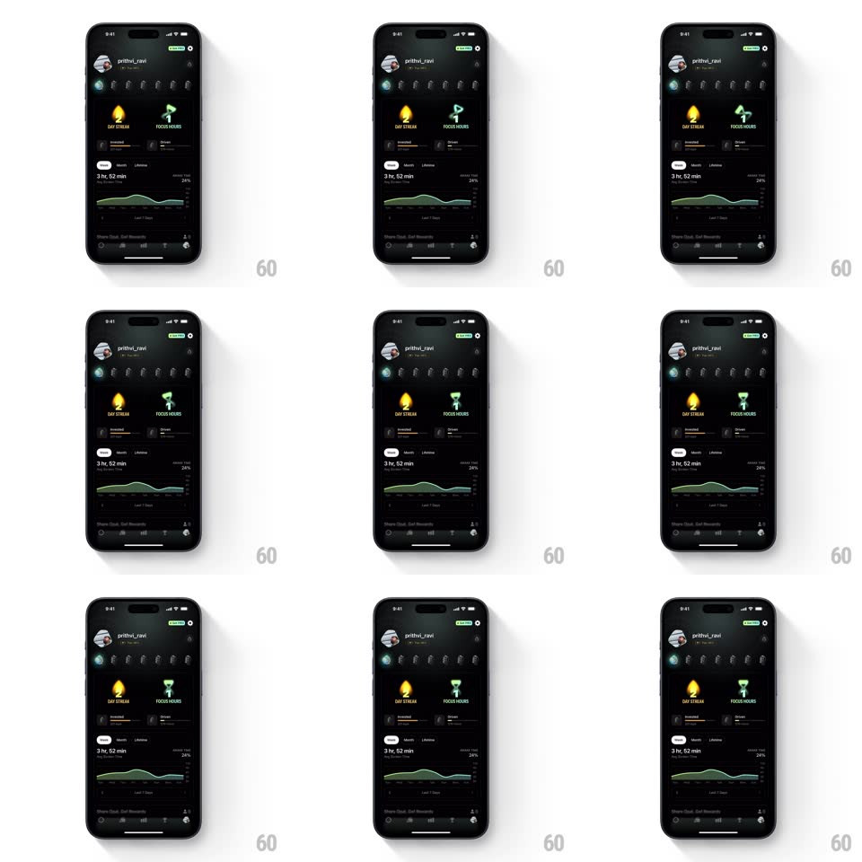

Media
Frame-by-frame

Rebuild this animation 1:1: Opal's dashboard idle loops - the "2 DAY STREAK" flame flickers continuously while the "1 FOCUS HOURS" hourglass drains and flips, over the dark stats dashboard.

Rebuild this animation 1:1: Opal's dashboard idle loops - the "2 DAY STREAK" flame flickers continuously while the "1 FOCUS HOURS" hourglass drains and flips, over the dark stats dashboard.
## Integration
Integration: stack-agnostic spec - springs given as stiffness/damping, timed motions as duration + curve; map every value to your framework and animation library of choice.
## Scene
Dark dashboard: profile header ("prithvi_ravi"), a row of day circles, two stat cards side by side - yellow flame over "2 DAY STREAK" and green hourglass over "1 FOCUS HOURS" - a Weekly/Lifetime segmented pill, a "3 hr, 02 min" screen-time figure with a green area graph, and the tab bar.
## Motion spec
Pattern: looping icon idle animations.
- Flame: the flame's body wobbles (scale 1/1.06 alternating on x and y, 700ms period, ease-in-out) while its inner core flickers brightness (+-15%, 350ms, random phase) and a soft glow breathes behind it (2s).
- Hourglass: sand streams from top bulb to bottom over 3s (top level sinks, bottom rises, a thin falling stream), pauses 400ms, then the hourglass rotates 180deg (spring ~300/20, 500ms) and repeats.
- Graph: the green area wave undulates slowly (amplitude +-4px, 5s) beneath both.
## Calibration
- The two loops run on independent clocks - they never sync.
- Icons loop in place; the stat numbers and labels are static.
## Reduced motion
Both icons are static; the graph holds its shape.
## Don't miss
- The hourglass flip is a rotation, not a fade - the sand resets through the flip.
- The flame never leaves its card bounds, glow included.